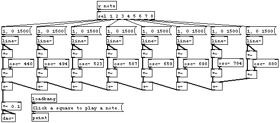

/*************************************************************************
"Notes Pad"
A very basic synth using the WebPd sound engine and Processing.js
-Brandon James 2010
*************************************************************************/
// Global variables
int bottom, xpos, zone;
// Setup the Processing Canvas
void setup(){
size( 400, 200 );
fill(#990000);
pd = new Pd(44100, 4410);
pd.load("notespad.pd", pd.play);
}
// Main draw loop
void draw(){
background(127);
stroke(255);
//draw grid
line(0, height*.5, width, height*.5);
line(width*.25, 0, width*.25, height);
line(width*.5, 0, width*.5, height);
line(width*.75, 0, width*.75, height);
//1 if mouse is over bottom row
bottom = (mouseY < (height/2) ? 1 : 0);
//detect horizontal position
if (mouseX < width*.25){
xpos = 1;
}else if(mouseX < width*.5){
xpos = 2;
}else if(mouseX < width*.75){
xpos = 3;
}else if(mouseX < width){
xpos = 4;
}
//draw circle over selected zone
stroke(0);
ellipseMode(CENTER);
ellipse(((xpos-1)*(width/4))+(width/8),((1-bottom)*100)+(height/4),width*.05,height*.1);
zone = (((1-bottom)*4)+xpos);
}
void mousePressed(){
//send note to PD patch
pd.send("note", zone);
}